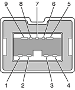

The Xserve computer has three external FireWire ports: two FireWire 800 on the rear panel of the enclosure and one FireWire 400 on the front. The bilingual FireWire 800 ports have 9-pin connectors and support transfer rates up to 800 Mbps; the FireWire 400 port has a 6-pin connectors and supports transfer rates of 100, 200, and 400 Mbps. As long as security is not engaged, the Xserve computer can boot through FireWire; see “Booting from a FireWire Device”.
The FireWire ports
The FireWire hardware and software provided with the Xserve are capable of all asynchronous and isochronous transfers defined by IEEE standards 1394a and 1394b.
Developers of FireWire peripherals are required to provide device drivers. A driver for DV (digital video) is included in QuickTime 4.0 and later.
For more information about FireWire on Macintosh computers, please refer to the Apple FireWire website and the other sources listed in “FireWire Interface”.
FireWire 800 Connector
FireWire 400 Connector
Booting from a FireWire Device
The FireWire 800 port on the Xserve computer is based on IEEE 1394b and enables a 800 Mbps transfer rate. FireWire 800 uses a 9-pin connector and is backwards compatible with original 1394 FireWire devices with 6-pin or 4-pin connectors. With the appropriate cable, the 9-pin port works seamlessly with legacy FireWire devices. Cables are available to go from both 6-pin and 4-pin connectors to a 9-pin, and 9-pin to 9-pin.
| Note: FireWire adapter cables are not included in the package. |
The 9-pin FireWire 800 connector is shown in Figure 3-2. Its connector signals and pin assignments are shown in Table 3-2.
Figure 3-2 9-pin FireWire 800 connector
Table 3-2 Signals on the 9-pin FireWire 800 connector
| Pin | Signal name | Description |
|---|---|---|
| 1 | TPB– | Twisted-pair B Minus |
| 2 | TPB+ | Twisted-pair B Plus |
| 3 | TPA– | Twisted-pair A Minus |
| 4 | TPA+ | Twisted-pair A Plus |
| 5 | TPA (R) | Twisted-pair A Ground Reference |
| 6 | VG | Power Ground |
| 7 | SC | Status Contact (no connection; reserved) |
| 8 | VP | Power Voltage (18 to 25 V DC) |
| 9 | TPB (R) | Twisted-pair B Ground Reference |
VP (pin 8) provides up to 15 W power, shared with the other FireWire connectors. The voltage on the power pin is 18 to 25 V.
The 9-pin FireWire port is capable of operating at 100, 200, 400, and 800 Mbps, depending on the device it is connected to. Using a cable with a 9-pin connector at one end and a 4-pin or 6-pin connector at the other, the 9-pin port is capable of directly connecting to all existing FireWire devices. Using a cable with 9-pin connectors at both ends, the 9-pin port is capable of operating at 800 Mbps.
The IEEE 1394b standard defines long-haul media using Cat 5 UTP and several kinds of optical fiber. The Xserve computer is interoperable with such cables but cannot be directly connected to them. To use long-haul cables, connect the computer to a 1394b hub that has the desired kind of long-haul connectors. If the hub has a bilingual port, that port can be connected to any of the computer’s FireWire ports. If the hub has a beta-only port, it can be connected only to the computer’s 9-pin port.
The FireWire 400 port has a connector with six pins, as shown in Figure 3-3. The connector signals and pin assignments are shown in Table 3-3.
Figure 3-3 FireWire 400 connector
![[image: ../art/q28_03.gif]](../art/q28_03.gif)
Table 3-3 Signals on the FireWire 400 connector
| Pin | Signal name | Description |
|---|---|---|
| 1 | Power | Power (approximately 25 V DC) |
| 2 | Ground | Ground return for power and inner cable shield |
| 3 | TPB– | Twisted-pair B Minus |
| 4 | TPB+ | Twisted-pair B Plus |
| 5 | TPA– | Twisted-pair A Minus |
| 6 | TPA+ | Twisted-pair A Plus |
| Shell | — | Outer cable shield |
The power pin provides up to 15 W total power for all three FireWire connectors. The voltage on the power pin can be from 18 to 25 V.
Pin 2 of the FireWire 400 connector is ground return for both power and the inner cable shield. In a FireWire cable with a 4-pin connector on the other end, the wire from pin 2 is connected to the shell of the 4-pin connector.
The signal pairs are crossed in the cable itself so that pins 5 and 6 at one end of the cable connect with pins 3 and 4 at the other end. When transmitting, pins 3 and 4 carry data and pins 5 and 6 carry clock; when receiving, the reverse is true.
Xserve can boot from a FireWire storage device that implements SBP-2 (Serial Bus Protocol) with the RBC (reduced block commands) command set. Detailed information is available from Developer Technical Support: dts@apple.com.
For additional information about the FireWire interface and the Apple APIs for FireWire device control, see the references shown in “FireWire Interface”.